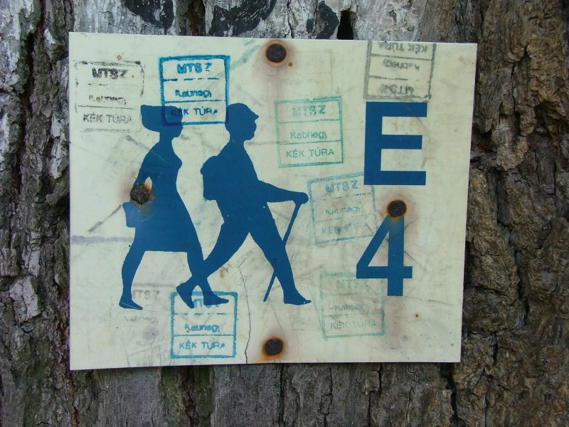
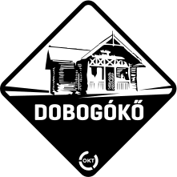
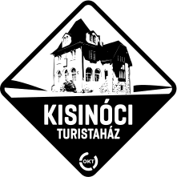

Mi az a Kéktúra?
Az Országos Kéktúra Magyarország északi tájain végighaladó, Írott-kőtől Hollóházáig tartó, folyamatos, jelzett turistaút. A hossza több mint 1100 km. Ez Magyarország és Európa első hosszútávú turistaútja, a Rockenbauer Pál Dél-Dunántúli Kéktúrával és az Alföldi Kéktúrával része az Országos Kékkörnek.
Teljesítése semmilyen kötöttséggel nem jár, az útvonalat végigjárva a rendszeres sportoláson túl képet kaphatunk hazánk életéről, tájairól, megismerhetjük mindennapjait, lakóit, történelmét, föld- és vízrajzát, állatvilágát és természeti szépségeit.
Az útvonalon a Magyar Természetjáró Szövetség létrehozott két jelvényszerző túramozgalmat: az Országos Kéktúrát, illetve a Gyermek Kéktúrát.
A kéktúra hosszabb és rövidebb szakaszokból álló túraútvonal, amely bebarangolja Magyarország hegységeit. Jelölése a fehér alapra festett kék sáv.
Kékinfó
- Hossz: 1164 km
- Szakaszok: 27 db
- Bélyegzőhelyek: 151 db
- Szintemelkedés: 31.425 m
- Szintcsökkenés: 31.980 m
- Teljesítők száma (2022. 09. 04-ig): 8197 fő
Szakaszok
| Tájegységek | Végpontok | Táv (km) | |
|---|---|---|---|
|  | Pilis | Rozália Téglagyár - Dobogókő | 22,8 |
| Dobogókő - Visegrád | 24,7 | ||
|  | Börzsöny | Nagymaros - Nógrád | 41 |
Forrás:Kéktúra